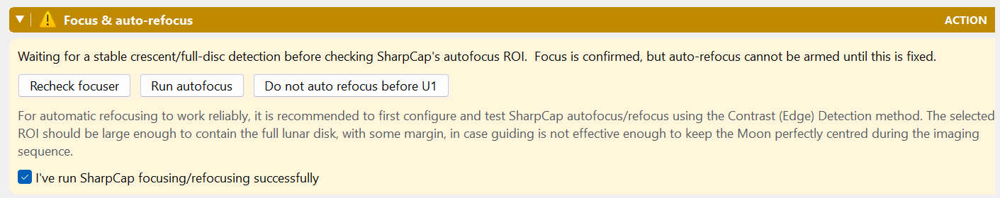
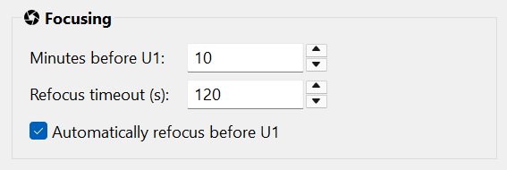

Focusing
Establish a sharp lunar baseline and rehearse any automatic refocus.
Focus before starting
- Centre and frame the Moon with the intended image configuration.
- Adjust exposure so lunar detail is readable without clipping.
- Focus using the lunar image in SharpCap, and inspect the result at a useful display scale.
- If you intend to use autofocus, configure the focuser and SharpCap Focus Assistant and prove a repeatable successful scan with this rig.
- Confirm focus in preflight only after inspecting the image.
Check and confirm in preflight
With automatic refocusing selected in the plan, Focus & auto-refocus provides Recheck focuser, Run autofocus (which becomes Cancel during a scan), and a separate confirmation checkbox. Recheck after connecting the focuser in SharpCap and wait for the result. A pending check is not a disconnected focuser.
Inspect the image before checking I've run SharpCap focusing/refocusing successfully, or The imaging target is focused when refocusing is not planned. A successful scan does not check this box for you, and checking it does not verify SharpCap's saved autofocus setup. Confirmation lasts up to ten minutes and is checked again at Start. A changed camera or physical/simulated imaging source, or an observed change or loss of a previously known focuser position, requires a new confirmation. A focuser that reported no position at confirmation is not required to provide one later. Reopening preflight does not renew the confirmation.

Prepare SharpCap's method and focusing ROI
First configure and successfully test SharpCap autofocus/refocus on this rig. HelioMaker checks the saved successful configuration. Contrast (Edge) Detection is recommended; Fourier detail and other non-stellar methods remain accepted. Star/FWHM/HFD/HFR/Bahtinov methods are not suitable for this lunar check.
The saved SharpCap focusing measurement ROI must contain the full lunar disk with margin for imperfect guiding. This is not HelioMaker's tracking ROI, and the preflight badge does not edit it. With a shared camera, the check needs a current stable lunar detection and the imaging-camera geometry. With a separate guiding camera, guide-camera detection cannot verify the imaging camera's focusing ROI: inspect that ROI in SharpCap yourself.
Optional refocus before U1
When your build exposes the Focusing group, Automatically refocus before U1 plans one SharpCap autofocus during the penumbral phase. Choose the lead in Minutes before U1 and a Refocus timeout (s). For a live physical-camera run, scheduling also requires current focuser/setup readiness, valid focus confirmation, and no run-only decline. Starting with warnings ignored does not grant this permission.
Use Do not auto refocus before U1 to decline it for this run, or Enable auto refocusing before U1 to reconsider. This choice leaves the saved plan unchanged, survives plan-version detours in the same preparation, and resets for a new preparation. Declining refocus does not remove the need to inspect and confirm the focus baseline.
U1 is the start of the umbral eclipse, so this occurs before partial ingress. A penumbral-only eclipse has no U1 and cannot enable this option. Rehearse the scan with enough lead time and verify how capture and guiding resume.
In a physical-camera rehearsal, the preflight Run autofocus action can test the real rig. Automatic scheduled refocusing during a rehearsal remains simulated; a rehearsal is not proof that the timed hardware scan will succeed during a live run.
